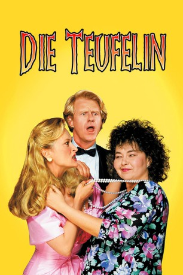

#9562 Die Teufelin
Alternativ: She-Devil
 
 IMDB-Wertung: 5.5 / 10
IMDB-Wertung: 5.5 / 10  Metascore: 0
Metascore: 0 
Die rundliche Hausfrau Ruth Patchett wird von ihrem ansehnlichen Gatten Bob verlassen, der sich unsterblich in die Bestseller-Autorin Mary Fisher verliebt hat. Sie schwört Rache und beginnt all das zu zerstören, an dem das Herz des untreuen Gemahls hängt. Systematisch bringt sie ihn um Heim, Familie, Karriere und macht ihn zum Betrüger, den man hinter Gitter steckt. Dabei geht nicht nur die Beziehung des Charmeurs zu Mary zugrunde, sondern die schmerzhafte Läuterung bringt den untreuen Wüstling zurück in den Kreis seiner Familie.
Jahr: 1989
Dauer: 99 Minuten
FSK: 12
Land: USA Studio: Orion PicturesTonspuren:
Untertitel:
Auflösung: 1080p (1920x1040) Größe: 7833 MB
Genre: Komödie
Regisseur: Susan Seidelman
Drehbuch: Fay Weldon, Barry Strugatz, Mark R. Burns
Soundtrack: Howard Shore
Darsteller:
 Meryl Streep als Mary Fisher
Meryl Streep als Mary Fisher- Roseanne Barr als Ruth Patchett
 Ed Begley Jr. als Bob
Ed Begley Jr. als Bob Linda Hunt als Hooper
Linda Hunt als Hooper Sylvia Miles als Mrs. Fisher
Sylvia Miles als Mrs. Fisher Bryan Larkin als Andy Patchett
Bryan Larkin als Andy Patchett A Martinez als Garcia
A Martinez als Garcia Maria Pitillo als Olivia Honey
Maria Pitillo als Olivia Honey Mary Louise Wilson als Mrs. Trumper
Mary Louise Wilson als Mrs. Trumper Jack Gilpin als Larry
Jack Gilpin als Larry- Robin Leach als Himself
 Deborah Rush als 'People' Reporter
Deborah Rush als 'People' Reporter- Sally Jessy Raphael als Herself
- Doris Belack als Paula
- Lori Tan Chinn als Vesta Rose Woman
- Mark Steiner als Valet
- Cynthia Adler als Vesta Rose Commercial Voice
- Larry Marshall als Guggenheim Party Guest
 Clifton James als Bob's Father (uncredited)
Clifton James als Bob's Father (uncredited)- David McCarthy als Bob's College Roommate (uncredited)
 D.J. Sharp als Vocal Effects (uncredited)
D.J. Sharp als Vocal Effects (uncredited)- Elisebeth Peters als Nicolette Patchett
- Susan Willis als Ute
- Nitchie Barrett als Bob's Secretary
- June Gable als Realtor
- Jeanine Joyce als Flower Lady
- Joe Pentangelo als Detective
- Rosanna Carter als Judge Brown
- George Kodisch als Court Officer
- Manny Olmo als Cook
- Alain Jarry als Alain
- John Richard Reynolds als Book Store Customer
- George W.S. Trow als Douglas
- Sandra Fine als Roslyn Artists String Quartet (Director)
- Christopher Collins Lee als Roslyn Artists String Quartet
- Julie Signitzer als Roslyn Artists String Quartet
- Scott Wyatt Rawls als Roslyn Artists String Quartet
- Mack Brandon als The Mack Brandon Duo
- Will Ford als The Mack Brandon Duo
- Sally Sockwell als Guggenheim Party Guest
- Mary Marshall als Mary's Party Guest
- R. Patrick Sullivan als Mary's Party Guest
- Anna Marie Winds als Mary's Party Guest
- Steven Prince als Mary's Party Guest
- Martin Snaric als Mary's Party Guest
- Heather Gorecki als Unnamed (uncredited)
- Jill Tompkins als Model (uncredited)
Datei: X:\1989\Teufelin, Die (1989, FSK12, 1920x1040).mkv seit 11.09.2018
Festplatte: HD 1987-1991
 Es gibt insgesamt 54 Filme in der Gruppe '1989'
Es gibt insgesamt 54 Filme in der Gruppe '1989'